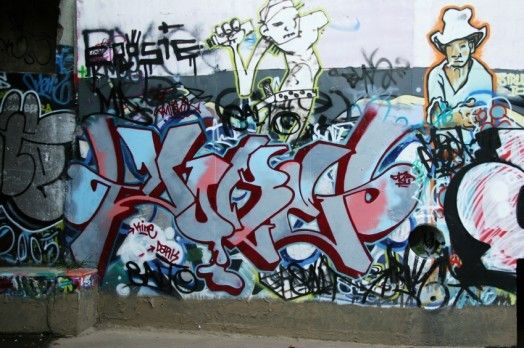

This is the standout community legal awareness arm of the organization where pro-bono lawyers, law students and dedicated community leaders converge, interact with communities and meet players in the criminal justice system for impactful interventions on legal issues facing society. As justice defenders, our objective at the Access to Justice program is to ensure that all persons have equal access to justice, have basic knowledge of the law and know their their rights and obligations under the law.
We reach our youths through concerts and educating them about dangers of crime in our society.
Here are some of our works.
We work hand in hand with other organisation who help us in educating youths ona dangers of crime. Here are some links https://www.crimesipoa.org/.
This program provides advocacy, awareness and lobbying, primarily engaging young people, and communities to reduce crime, anti-social behavior and fear of crime in the society. Through the Focused Youth Project we work with students in schools and colleges, and young people loitering around shopping centers. We mentor them to be pro-active and part of the solution in community safety issues linked to crime, truancy, delinquency, nuisance, under-age drinking, child prostitution, drugs and other anti-social behavior. We incorporate skills transfer and offer a package of services such as digital skills, library services, sports, art, dance, music and other TVETs to cater to local needs while also ensuring full engagement of youth to divert them from criminality and social exclusion.